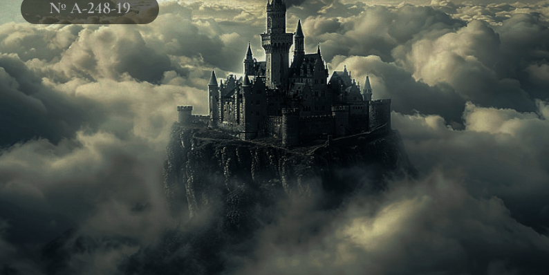
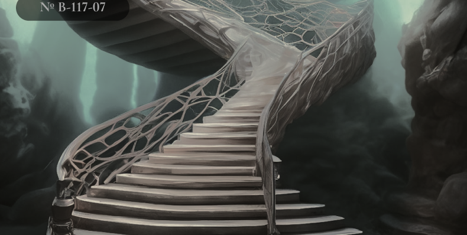
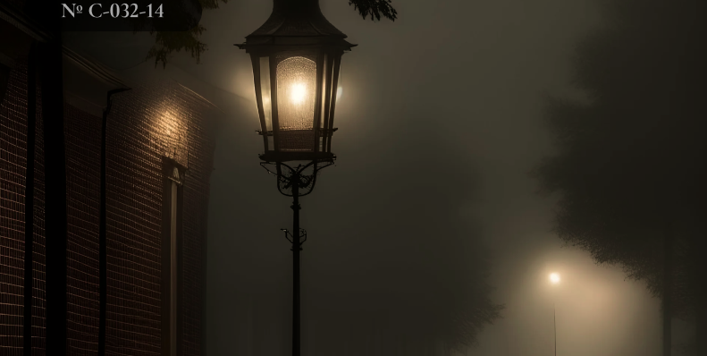
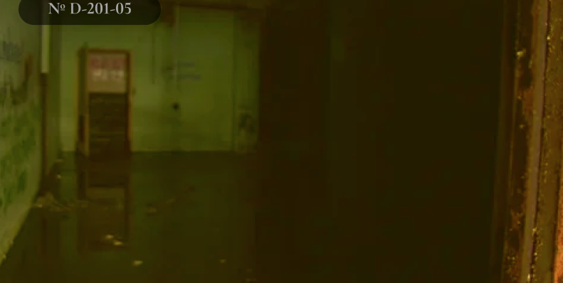

№ A-248-19
Город в облаках
Город парит среди облаков. Улицы теряются в небе.
10 / UX/UI · ВЕБ-КОНЦЕПЦИЯ
Воображаемый цифровой архив для тех, кто просыпается с обрывком сна или хочет заглянуть в чужие истории. В коллекцию можно войти через знакомый образ, настроение или тему.
Войти в коллекциюИдея и сценарий
Сон легко вспомнить по лестнице, свету или ощущению покоя. Полный сюжет может ускользнуть. Поэтому у архива два входа: искать по тому, что осталось в памяти, или открыть коллекцию и начать с любой истории.
На первом экране действие «Найти свой сон» сразу ведёт к форме. Она начинается со свободного описания, где достаточно детали или ощущения.
В концепции записи получают метки настроения, темы и символов. Человек может сузить поиск по настроению и выбрать несколько категорий.
Изображение помогает узнать мотив. Название и короткий текст дают контекст, а номер и строка «Последний раз» поддерживают образ архивной описи.
Интерактивный фрагмент
Выберите настроение или мотив. Метки свяжут записи с похожим ощущением: покой встречается и в лестнице над водой, и в свете фонаря.

Город парит среди облаков. Улицы теряются в небе.

Лестница уходит в глубину. Вода спокойна, но манит.

Фонарь рассказывает истории тем, кто задержался по пути домой.

Из комнаты нет выхода, но в ней всегда светло.
Таких сочетаний в этой подборке пока нет. Попробуйте оставить один фильтр.
Визуальное исследование
Четыре варианта сохраняют один маршрут, от арки на первом экране до коллекции и формы поиска. Меняются глубина, свет и степень контраста. Так можно сравнить, где атмосферу поддерживает сам фон и где тексту нужна более плотная подложка.
Результат
В четырёх полноразмерных макетах собрана единая структура: знакомство с миром архива, правила его работы, опись и поиск. Интерактивный фрагмент кейса показывает, как метки помогают обнаружить сходство между историями.
Следующая проверка для прототипа: дать человеку один образ и предложить найти похожую запись. В сценарии сохранения сна важно проверить, понятно ли, кто увидит запись, и можно ли оставить её личной.